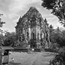
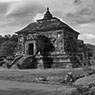

1 - 5
add(jQuery(this), number += 1, "Candi Borobudur", "ekspedisi/borobudur","Magelang, Jawa Tengah, Indonesia
Borobudur adalah candi Buddha termegah-terbesar di dunia. Didirikan 800 Masehi pada masa pemerintahan Syailendra. ","-7.607873800000000000","110.203751300000020000", ' ');
add(jQuery(this), number += 1, "Candi Prambanan", "ekspedisi/prambanan","Sleman, Yogyakarta, Indonesia
');
add(jQuery(this), number += 1, "Candi Prambanan", "ekspedisi/prambanan","Sleman, Yogyakarta, Indonesia
Candi Prambanan atau Candi Loro Jonggrang adalah candi Hindu terbesar di Indonesia yang dibangun pada abad ke-9 M. ","-7.752023200000000000","110.491368800000030000", ' ');
add(jQuery(this), number += 1, "Istana Ratu Boko", "ekspedisi/ratuboko","Sleman, Yogyakarta, Indonesia
');
add(jQuery(this), number += 1, "Istana Ratu Boko", "ekspedisi/ratuboko","Sleman, Yogyakarta, Indonesia
Istana Ratu Boko adalah kompleks istana megah yang dibangun pada abad ke-8. Biara di bukit yang penuh kedamaian.","-7.771527","110.490738", ' ');
add(jQuery(this), number += 1, "Candi Ijo", "ekspedisi/ijo","Sleman, Yogyakarta, Indonesia
');
add(jQuery(this), number += 1, "Candi Ijo", "ekspedisi/ijo","Sleman, Yogyakarta, Indonesia
Candi Ijo adalah candi yang letaknya paling tinggi di Yogyakarta. Menyuguhkan pesona alam sekaligus budaya","-7.783776","110.512115", ' ');
add(jQuery(this), number += 1, "Candi Barong", "ekspedisi/barong","Sleman, Yogyakarta, Indonesia
');
add(jQuery(this), number += 1, "Candi Barong", "ekspedisi/barong","Sleman, Yogyakarta, Indonesia
Candi ini dibangun sekitar abad ke-9 dan ke-10 sebagai peninggalan Kerajaan Medang periode Mataram.","-7.775686","110.497350", ' ');
6 - 10
add(jQuery(this), number += 1, "Candi Kalasan", "ekspedisi/kalasan","Sleman, Yogyakarta, Indonesia
');
6 - 10
add(jQuery(this), number += 1, "Candi Kalasan", "ekspedisi/kalasan","Sleman, Yogyakarta, Indonesia
Candi ini memiliki 52 stupa. Berada di sisi jalan raya Yogyakarta-Solo, sekitar 2 km dari candi Prambanan.","-7.767273","110.472357", '');
add(jQuery(this), number += 1, "Candi Sari", "ekspedisi/sari","Sleman, Yogyakarta, Indonesia
Candi Sari adalah candi Buddha yang dibangun sekitar abad ke-8 dan ke-9 pada saat zaman Kerajaan Mataram Kuno","-7.761527","110.474274", ' ');
add(jQuery(this), number += 1, "Candi Banyunibo", "ekspedisi/banyunibo","Sleman, Yogyakarta, Indonesia
');
add(jQuery(this), number += 1, "Candi Banyunibo", "ekspedisi/banyunibo","Sleman, Yogyakarta, Indonesia
Candi ini dibangun pada sekitar abad ke-9 pada zaman Kerajaan Mataram Kuno.","-7.777990","110.494077", '');
add(jQuery(this), number += 1, "Candi Sambisari", "ekspedisi/sambisari","Sleman, Yogyakarta, Indonesia
Candi Sambisari adalah candi Hindu (Siwa) yang dibangun pada abad ke-9 pada zaman Kerajaan Mataram Kuno.","-7.762473","110.447131", ' ');
add(jQuery(this), number += 1, "Candi Sewu", "ekspedisi/sewu","Sleman, Yogyakarta, Indonesia
');
add(jQuery(this), number += 1, "Candi Sewu", "ekspedisi/sewu","Sleman, Yogyakarta, Indonesia
Candi Sewu adalah candi Buddha terbesar kedua setelah Borobudur. Berusia lebih tua daripada Borobudur dan Prambanan.","-7.743928","110.492851", ' ');
11 - 15
add(jQuery(this), number += 1, "Candi Plaosan", "ekspedisi/plaosan","Sleman, Yogyakarta, Indonesia
');
11 - 15
add(jQuery(this), number += 1, "Candi Plaosan", "ekspedisi/plaosan","Sleman, Yogyakarta, Indonesia
Candi Plaosan dibangun pada abad ke-9 oleh Raja Rakai Pikatan dan Sri Kahulunan pada zaman Kerajaan Medang (Mataram Kuno).","-7.740831","110.504616", ' ');
add(jQuery(this), number += 1, "Candi Sojiwan", "ekspedisi/sojiwan","Sleman, Yogyakarta, Indonesia
');
add(jQuery(this), number += 1, "Candi Sojiwan", "ekspedisi/sojiwan","Sleman, Yogyakarta, Indonesia
Candi Sojiwan adalah sebuah candi Budha, kurang lebih dibangun antara tahun 842 dan 850 Masehi.","-7.775277","110.524719", '');
add(jQuery(this), number += 1, "Candi Pawon", "ekspedisi/pawon","Sleman, Yogyakarta, Indonesia
Candi Pawon berada di antara Candi Mendut dan Candi Borobudur.","-7.606117","110.219550", ' ');
add(jQuery(this), number += 1, "Candi Mendut", "ekspedisi/mendut","Sleman, Yogyakarta, Indonesia
');
add(jQuery(this), number += 1, "Candi Mendut", "ekspedisi/mendut","Sleman, Yogyakarta, Indonesia
Candi Mendut didirikan semasa pemerintahan Raja Indra dari dinasti Syailendra sekitar 824 Masehi.","-7.604803","110.230132", ' ');
add(jQuery(this), number += 1, "Candi Gebang", "ekspedisi/gebang","Sleman, Yogyakarta, Indonesia
');
add(jQuery(this), number += 1, "Candi Gebang", "ekspedisi/gebang","Sleman, Yogyakarta, Indonesia
Candi Gebang diperkirakan dibangun pada abad ke-8 adalah candi Hindu.","-7.749618","110.415891", ' ');
16 - 20
add(jQuery(this), number += 1, "Candi Kedulan", "../targetekspedisi","Sleman, Yogyakarta, Indonesia
');
16 - 20
add(jQuery(this), number += 1, "Candi Kedulan", "../targetekspedisi","Sleman, Yogyakarta, Indonesia
Candi Kedulan adalah candi Hindu yang dibangun pada zaman Kerajaan Mataram Kuno sekitar abad ke-8 dan ke-9.","-7.757960","110.469583", '');
add(jQuery(this), number += 1, "Candi Miri", "../targetekspedisi","Sleman, Yogyakarta, Indonesia
Candi Miri adalah candi Hindu. Candi ini kini hanya menyisakan reruntuhannya saja.","-7.771062","110.506061", '');
add(jQuery(this), number += 1, "Candi Gampingan", "../targetekspedisi","Sleman, Yogyakarta, Indonesia
Candi Gampingan adalah sebuah kompleks candi Buddha. Dibangun pada zaman Kerajaan Mataram Kuno.","-7.835408","110.436635", '');
add(jQuery(this), number += 1, "Situs Dawangsari", "../targetekspedisi","Sleman, Yogyakarta, Indonesia
Candi Dawangsari merupakan candi Budha. Kompleks Candi Dawangsari berupa sebaran batu-batuan.","-7.774323","110.497508", ' ');
add(jQuery(this), number += 1, "Candi Palgading", "../targetekspedisi","Sleman, Yogyakarta, Indonesia
');
add(jQuery(this), number += 1, "Candi Palgading", "../targetekspedisi","Sleman, Yogyakarta, Indonesia
Candi Palgading candi peninggalan era Mataram kuno. Candi ini mulai terkuak keagungannya.","-7.776383","110.489627", ' ');
21-25
add(jQuery(this), number += 1, "Candi Morangan", "../targetekspedisi","Sleman, Yogyakarta, Indonesia
');
21-25
add(jQuery(this), number += 1, "Candi Morangan", "../targetekspedisi","Sleman, Yogyakarta, Indonesia
Candi Morangan adalah candi Hindu. Dibangun sekitar abad ke-9 dan ke-10 pada masa Kerajaan Mataram Kuno.","-7.683381 ","110.468291", ' ');
add(jQuery(this), number += 1, "Komplek Candi Arjuna (Dieng)", "../targetekspedisi","Banjarnegara, Jawa Tengah, Indonesia
');
add(jQuery(this), number += 1, "Komplek Candi Arjuna (Dieng)", "../targetekspedisi","Banjarnegara, Jawa Tengah, Indonesia
Candi Dieng adalah kompleks candi-candi Hindu yang dibangun pada abad ke-7.","-7.205223","109.906885", ' ');
add(jQuery(this), number += 1, "Candi Gana (Asu)", "../targetekspedisi","Sleman, Yogyakarta, Indonesia
');
add(jQuery(this), number += 1, "Candi Gana (Asu)", "../targetekspedisi","Sleman, Yogyakarta, Indonesia
Candi Gana merupakan salah satu dari 4 buah candi yg mengelilingi Candi Sewu.","-7.743978","110.496143", ' ');
add(jQuery(this), number += 1, "Candi Polangan", "../targetekspedisi","Sleman, Yogyakarta, Indonesia
');
add(jQuery(this), number += 1, "Candi Polangan", "../targetekspedisi","Sleman, Yogyakarta, Indonesia
Pada saat ini yang tersisa di Situs Palengan hanyalah berupa beberapa potong batu candi dan sebuah Yoni.","-7.786885","110.489960", ' ');
add(jQuery(this), number += 1, "Situs Arca Bugisan", "../targetekspedisi","Sleman, Yogyakarta, Indonesia
');
add(jQuery(this), number += 1, "Situs Arca Bugisan", "../targetekspedisi","Sleman, Yogyakarta, Indonesia
Arca Bugisan adalah beberapa buah arca dan reruntuhan batu yang tersebar di pekarangan rumah warga.","-7.759223","110.481854", ' ');
26 - 30
add(jQuery(this), number += 1, "Candi Grembyangan", "candi/grembyangan","Sleman, Yogyakarta, Indonesia
');
26 - 30
add(jQuery(this), number += 1, "Candi Grembyangan", "candi/grembyangan","Sleman, Yogyakarta, Indonesia
Under Construction.","-7.791637","110.467231", '');
add(jQuery(this), number += 1, "Candi Sanan", "candi/sanan","Sleman, Yogyakarta, Indonesia
Under Construction.","-7.772460","110.472692", ' ');
add(jQuery(this), number += 1, "Candi Pelemsari", "candi/pelemsari","Sleman, Yogyakarta, Indonesia
');
add(jQuery(this), number += 1, "Candi Pelemsari", "candi/pelemsari","Sleman, Yogyakarta, Indonesia
Under Construction.","-7.775787","110.477144", ' ');
add(jQuery(this), number += 1, "Candi Jobohan", "candi/jobohan","Sleman, Yogyakarta, Indonesia
');
add(jQuery(this), number += 1, "Candi Jobohan", "candi/jobohan","Sleman, Yogyakarta, Indonesia
Under Construction.","-7.776585","110.479620", ' ');
add(jQuery(this), number += 1, "Candi Mojosari", "candi/mojosari","Sleman, Yogyakarta, Indonesia
');
add(jQuery(this), number += 1, "Candi Mojosari", "candi/mojosari","Sleman, Yogyakarta, Indonesia
Under Construction.","-7.772253","110.478397", ' ');
add(jQuery(this), number += 1, "Candi Jirak", "candi/jirak","Sleman, Yogyakarta, Indonesia
');
add(jQuery(this), number += 1, "Candi Jirak", "candi/jirak","Sleman, Yogyakarta, Indonesia
Under Construction.","-7.782022","110.477922", ' ');
add(jQuery(this), number += 1, "Candi Kebondalem", "candi/kebondalem","Sleman, Yogyakarta, Indonesia
');
add(jQuery(this), number += 1, "Candi Kebondalem", "candi/kebondalem","Sleman, Yogyakarta, Indonesia
Under Construction.","-7.790154","110.473365", ' ');
add(jQuery(this), number += 1, "Candi Gangsiran", "candi/gangsiran","Sleman, Yogyakarta, Indonesia
');
add(jQuery(this), number += 1, "Candi Gangsiran", "candi/gangsiran","Sleman, Yogyakarta, Indonesia
Under Construction.","-7.791658","110.477962", ' ');
add(jQuery(this), number += 1, "Candi Nogosari", "candi/nogosari","Sleman, Yogyakarta, Indonesia
');
add(jQuery(this), number += 1, "Candi Nogosari", "candi/nogosari","Sleman, Yogyakarta, Indonesia
Under Construction.","-7.797390","110.477407", ' ');
add(jQuery(this), number += 1, "Candi Goa Sentono", "candi/goasentono","Sleman, Yogyakarta, Indonesia
');
add(jQuery(this), number += 1, "Candi Goa Sentono", "candi/goasentono","Sleman, Yogyakarta, Indonesia
Under Construction.","-7.812696","110.470691", ' ');
add(jQuery(this), number += 1, "Candi Sumberwatu", "candi/sumberwatu","Sleman, Yogyakarta, Indonesia
');
add(jQuery(this), number += 1, "Candi Sumberwatu", "candi/sumberwatu","Sleman, Yogyakarta, Indonesia
Under Construction.","-7.768593","110.496387", ' ');
add(jQuery(this), number += 1, "Candi Sumberwatu Kulon", "candi/sumberwatukulon","Sleman, Yogyakarta, Indonesia
');
add(jQuery(this), number += 1, "Candi Sumberwatu Kulon", "candi/sumberwatukulon","Sleman, Yogyakarta, Indonesia
Under Construction.","-7.767956","110.492058", ' ');
add(jQuery(this), number += 1, "Candi Klurak", "candi/klurak","Sleman, Yogyakarta, Indonesia
');
add(jQuery(this), number += 1, "Candi Klurak", "candi/klurak","Sleman, Yogyakarta, Indonesia
Under Construction.","-7.756629","110.491789", ' ');
add(jQuery(this), number += 1, "Candi Gempol", "candi/gempol","Sleman, Yogyakarta, Indonesia
');
add(jQuery(this), number += 1, "Candi Gempol", "candi/gempol","Sleman, Yogyakarta, Indonesia
Under Construction.","-7.758768","110.491725", ' ');
add(jQuery(this), number += 1, "Candi Gatak", "candi/gatak","Sleman, Yogyakarta, Indonesia
');
add(jQuery(this), number += 1, "Candi Gatak", "candi/gatak","Sleman, Yogyakarta, Indonesia
Situs Gatak kini hanya menyisakan 3 buah yoni yang semua ceratnya telah terbelah dan batu candi yang tersebar.","-7.761290","110.490040", ' ');
add(jQuery(this), number += 1, "Candi Gatak Kidul", "candi/gatakkidul","Sleman, Yogyakarta, Indonesia
');
add(jQuery(this), number += 1, "Candi Gatak Kidul", "candi/gatakkidul","Sleman, Yogyakarta, Indonesia
Under Construction.","-7.763167","110.490808", ' ');
add(jQuery(this), number += 1, "Candi Ringinsari", "candi/ringinsari","Sleman, Yogyakarta, Indonesia
');
add(jQuery(this), number += 1, "Candi Ringinsari", "candi/ringinsari","Sleman, Yogyakarta, Indonesia
Under Construction.","-7.764384","110.488056", ' ');
add(jQuery(this), number += 1, "Candi Gejlig", "candi/gejlig","Sleman, Yogyakarta, Indonesia
');
add(jQuery(this), number += 1, "Candi Gejlig", "candi/gejlig","Sleman, Yogyakarta, Indonesia
Under Construction.","-7.765973","110.487251", ' ');
========== no thumbnail
add(jQuery(this), number += 1, "Candi Tanjungtirto", "peta/tanjungtirto","Sleman, Yogyakarta, Indonesia
');
========== no thumbnail
add(jQuery(this), number += 1, "Candi Tanjungtirto", "peta/tanjungtirto","Sleman, Yogyakarta, Indonesia
Bekas Candi Tanjungtirto ini dahulunya terdapat sebuah candi Hindu.","-7.791291","110.463471", ' ');
');